OFF-LINE MINIMUM
Off-line minimum problem is a problem concerned with maintaining the dynamic set T with the help of operation such as INSERT and EXTRACT-MIN. In this a sequence 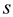 is maintained with the n INSERT and the m EXTRACT-MIN operations.
Every key has been inserted only once. It is used for determining the key that has been returned by EXTRACT-MIN operation. This problem is termed as off-line as the entire sequence is to be processed before the determination of the returned keys.
The algorithm of OFF-LINE-MINIMUM (m, n) is given below:
OFF-LINE-MINIMUM (m, n)
//for loop to trace all elements
1. for 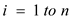
2. Determine the value of j such that 
//Use of if condition to check whether value should be extracted or not
3. if 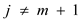
4. 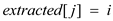
5. let l be the smallest value greater than j
for which set Kl exists
//Add the element in the array and destroy from the previously stored location
6. , destroying Kj
7. return extracted
a. Consider the sequence given below:
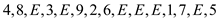
As it is clear from the above sequence that the number of INSERT call (n) is 9 and number of EXTRACT-MIN call (m) is 6.
As there are 6 EXTRACT-MIN operations, the result that has been obtained when they are performed is given below:
• When first EXTRACT-MIN operation is performed, the array has elements 4 and 8 in it. So, this call will extract the element 4.
• When second EXTRACT-MIN operation is performed, the array has elements 8 and 3 in it. So, this call will extract the element 3.
• When third EXTRACT-MIN operation is performed, the array has elements 8, 9, 2 and 6 in it. So, this call will extract the element 2.
• When fourth EXTRACT-MIN operation is performed, the array has elements 8, 9 and 6 in it. So, this call will extract the element 6.
• When fifth EXTRACT-MIN operation is performed, the array has elements 8 and 9 in it. So, this call will extract the element 8.
• When sixth EXTRACT-MIN operation is performed, the array has elements 9, 1 and 7 in it. So, this call will extract the element 1.
This sequence will provide the extracted array as:
4 3 2 6 8 1
The table that has been formed after iterations i for given sequence is shown below:
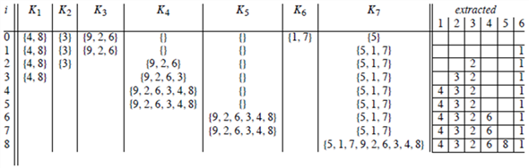
In the table given above, no changes have been made when the value of i is 5 and 7. It is because the value of j becomes equal to m+1.
b. In order to prove that the array returned by OFF-LINE-MINIMUM is correct, its contradictory should be considered.
Consider that the extracted array returned by the OFF-LINE-MINIMUM is not correct.
Consider x=extracted [j] be the smallest value.
Suppose that for this value, the array is incorrect.
And taking the correct solution is the array answer.
Consider y=answer [j] which is not equal to value of x.
So, there are two possibilities;
Either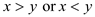.
If both the cases will false, this means that OFF-LINE-MINIMUM always returns correct extracted array.
Assume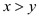;
This means that either y has smallest value of incorrect extracted array or the appearance of y is not there in extracted array.
The processing of y is always done before processing x.
So y had set value of m+1.
But, if answer [j] was set to y, this means that y initially have been in some Ki with i <= j.
As there is no value of extracted [j], yet processing of y is there. This means that the value of y cannot be inserted in set, because there is only union with the set above and there is no union to yet.
Therefore, the condition is false.
Consider the case when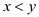:
The argument is that x must appear in the answer array. The appearance of x should be before the extraction of jth in the original sequence. It is because there is no backward movement of sets in OFF-LINE MINIMUM algorithm. Only the operation of unions is there with sets that are later than it.
If the extraction of x is not there by the jth extraction, this means that optimal solution will be x instead of y for the extraction of jth since i is smaller.
Therefore, the optimal solution must have extracted x for
some .
.
But, that means that extracted [j] holds some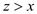.
By similar reasoning as above, x cannot be moved past the set since extracted [i] would have been empty at the time x was chosen.
Since, only union with the sets is there and has not been union yet, we cannot put the value of x in extracted [j] before extracted [i].
Therefore, the condition is false.
This is a contradiction since it was assumed that x is not equal to y and it is proved that, and cannot be true, x has to be equal to y and extracted array is correct.
c. The OFF-LINE-MINIMUM can be implemented with the help of a disjoint set data structure.
Initially n sets are created with the help of MAKE-SET operation. After that the union operation for n–m times are performed for the creation of sets.
For each set, maintain these three additional pieces of information which mention below:
• One to the state next to it,
• Second to the previous set
• Third the number itself.
Number will correspond to j, the next will correspond to and the previous will correspond to. These properties can be easily maintained after union of two sets.
The ‘for’ loops of OFF-LINE-MINIMUM algorithm, has iterations which first call FIND-SET on i . The number field is used on returned representative as j.
Then, to determine the next smallest set greater than j, simply use the next pointer.
At-most m UNION calls are made and the same method as above is followed.
A total of n MAKE-SET operations, n FIND-SET and n UNION operations are there. Total 3n operations which can be solved in amortized time. After making the changes, the algorithm of OFF-LINE-MINIMUM (m, n) is given below:
OFF-LINE-MINIMUM (m, n)
//for loop to trace all elements
1. for
2.
//Use of if condition to check whether value should be extracted or not
3. if
4.
5. 
//link the value of j and l and remove Kj from linked list
6. 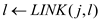 and removal of Kj from linked list
7. return extracted
Hence complexity of the worst case for the above implementation is equal to 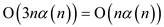 .
DEPTH DETERMINATION
In depth determination, a forest of trees is maintained and the following three main operations are used:
MAKE-TREE(t) : This operation is used to create a tree which has a single node t.
FIND-DEPTH(t) : This operation is used to find the depth of the node in a tree.
GRAFT (p, t) : This operation is used to make the node p the child of node t. Here, p is the root and node t may or may not be the root.
Consider the total number of nodes as n and n = m/3.
• Apply n MAKE-TREE operations on n single nodes (that is, make n trees each with a single node).
• Apply n–1 GRAFT operations on these n trees to form a single tree.
• Apply FIND-DEPTH(vi) operations on the resulting tree. In other words, find depth of each node in the tree.
• Each MAKE-TREE operation takes  time. Thus,
n MAKE-TREE operation takes
time. Thus,
n MAKE-TREE operation takes  time.
time.
• Each GRAFT operation takes time. Thus,
n GRAFT operation takes time.
• Each FIND-DEPTH operation takes time.
The total time required for the sequence of m operations is as follows:
Hence the total time required to apply m operations is ?( m 2 ).
MAKE-TREE is used to create a new tree with a single node and having its pseudo time set to 0.
A disjoint set data structure is defined as a collection of disjoint dynamic sets. Each of these can be identified by members of the set, which are representative.
In the dynamic set implementations, each element of the set is represented by an object and performs some operations.
1. Make-Set (v): Make-set is used to create a new set, which contains a single member (also representative). Since the sets are disjoint, v should not be in any other set.
2. Union (u, v): It combines the two sets u and v into one new set.
3. Find-Set (v): This operation is used to return a pointer to representative of a set that contains v.
The operation MAKE-TREE is similar to MAKE-SET operation. MAKE-TREE has one property that sets the d value to 0. The implementation of MAKE-TREE by using Make-Set operation is as follows:
MAKE-TREE (v)
//set the value of v as v.p
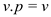
//set the rank of v as 0
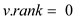
//set the value of v.p as 0
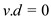
In the case of disjoint-sets, every single node has a depth of 0 and find path for node v consists of d [ v ]. Hence, the value of d [ v ] is always set to 0.
The operation FIND-DEPTH is implemented by modifying the operation FIND-SET. FIND-SET operation uses path compression, which makes every node point to the root. FIND-SET recursively calls itself and finds the path from v to r (root).
The FIND-SET can be modified to implement FIND-DEPTH, so that in each iteration, pseudo distance of node vi is updated.
FIND-SET (v)
//Condition to check whether the value of node is equal to its parent
if
//Assign the value of node to integer y
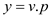
//recursion starts here, FIND-SET is used to get the value of representative
// element
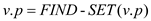
//update the pseudo distance
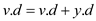
//return the value of v.p
return v.p
The above operation uses path compression and it updates the pseudo distances for each node.
The newly implemented FIND-DEPTH operation using modified FIND-SET operation is as follows:
FIND-DEPTH(v)
//Call FIND-SET
FIND-SET(v)
return 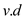
The FIND-DEPTH algorithm calls the algorithm of FIND-SET in order to perform path compression and to update the pseudo-distances. Finally, FIND-DEPTH returns the updated pseudo distance of v.
The operation 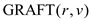 is similar to the operation UNION BY RANK. The implementation of to combine r and v, using the modified UNION and LINK procedures, is as follows:
GRAFT(r, v)
//Call FIND-SET function to know representative element of r

//Call FIND-SET function to know representative element of v
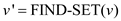
//Call FIND-DEPTH function and assign the value of depth to variable z
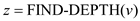
//if condition to compare rank for performing LINK operation
if 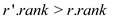
//After knowing that the rank of r’ is bigger, make it as root of smaller tree (v’)
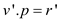
//the depth of r’ should be increased 1 more than depth of v
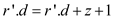
//Update value of v’
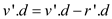
//When if condition is not satisfied, make v’ as root of smaller tree (r’)
else 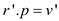
//Update the value of r’
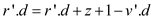
//if condition to check whether rank of both trees is same or not
if
//When the rank of both trees is same, the procedure has been followed as given // above, this leads to make increment in rank of v’
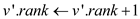
The algorithm finds out the representative elements of r and v, and then calculates the depth of v by using FIND-DEPTH function. Afterwards, the algorithm compares the ranks of v’ and r’ in order to perform LINK operation.
LINK creates the new tree. The tree with smaller rank becomes the child of tree having larger rank. Then LINK updates the depths of r’ and v’.
Consider the algorithm defined in the part (b). The operation MAKE-TREE is similar to operation MAKE-SET, FIND-DEPTH operation is similar to FIND-SET and GRAFT operation is similar to UNION operation.
With the reference of theorem 21.14 in the textbook, the worst-case time complexity is equal to.
Least-Common-Ancestor (LCA)
Least common ancestor algorithm is used to find the ancestor of two nodes that is farthest from the node.
Consider the tree given below:
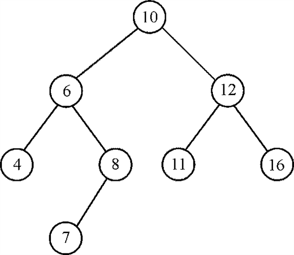
Suppose the query is to find the LCA of nodes 4 and 7. This algorithm initially considers all the nodes as white, after visiting all children of node, the node is colored black. This algorithm returns a node that has both nodes as its child is taken and it should be farthest node from the node. In order to find LCA of pair {4, 7}, all the ancestors of both nodes are visited and it is found that the LCA of the pair is node 6.
a. As considering the algorithm, the least common ancestor is calculated in such a way that the shared ancestor is farthest and has maximum value of depth from the root.
The procedure has a part which is used for determining the distance between node pairs in a tree, the print statement is used to find the least common ancestor with the help of the FIND-SET (v) operation. This takes place in the last step. This means farthest from the root.
So, it is called exactly once in the procedure. This means when the algorithm is at the stage of termination.
b. By using the disjoint-set operation computation of the sequences is there.
Consider 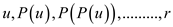 and 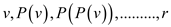for the nodes u and v.
In both sequences, P is used to represent the parent of given node and r is used to represents the root node of the tree.
The first element that has been obtained for the two sequences is the LCA.
Hence the time complexity always equal to the depth of tree.
It can be represented as 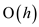 (where h is the height of tree).
c. Proof:
Suppose we know the least common ancestor of nodes u and v in a rooted tree T. The tree also has a node is the node w whose height is least and is an ancestor of u and v.
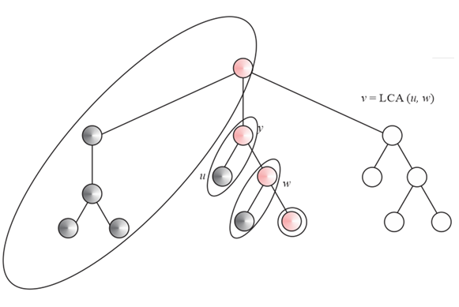
It has been given a rooted tree T and a set P having a pairs of node in T for the off-line least common ancestor’s problem, and here the least common ancestor of pair formed in T is determined.
In order to prove that Least Common Ancestor always prints the LCA of pairs u and v for each pair {u, v}?P
Consider the Depth-First Search Algorithm:
1. Recall that in DFS all nodes start white, open nodes are colored grey and closed nodes are colored black. Grey nodes reside in a stack S.
2. For each pink node w maintain a set D w consisting of w and all black nodes whose least pink ancestor is w.
3. When a node u is finished, for all pairs (u, v) ?P such that v is black and v ?D w for some grey node w, w is the least common ancestor of u and v.
Initial call is to LCA (root [T]):
LCA (u)
// creation of new set in which u is the only element
1. MAKE-SET (u)
// color operation
2. Color [u] ? grey # ancestor [u] ? u.
//for loop to visit every node under u and v
3. for each child v of u.
//perform LCA on node v
4. do LCA (v)
// union operation on u and v sets when pop v from DFS stack is there
5. UNION (u, v) – union
// representative of u’s set has pointer to u.
6. ancestor.[FIND (u)] ? u
//change the color of node u to black
7. color (u) ? black
//for loop to know all the pairs of u and v
8. for each node v such that {u,v} ?P
//if condition to check whether all the children of node v are visited or not
9. if color [v] = BLACK
//This statement will return the LCA of two nodes
10. then print ‘the LCA of’ u ‘and’ v ‘is’ ancestor[FIND(v)
// terminate
Therefore, it is proved that LCA correctly prints the least common ancestor of u and v for each pair {u, v} ? P.
d. An optimal disjoint-set data structure can be obtained by performing two heuristics- path compression and union by rank. If LCA algorithm is implemented with the help of the disjoint-set data structure then it will use 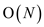 disjoint-set of operations.
In the same tree, the multiple pairs of nodes are calculated.
After implementation, it is made to run in 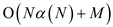 (where
 as
the size of the input).
as
the size of the input).
It is much slower than the linear time which has the complexity as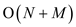.